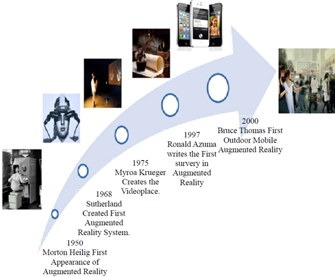
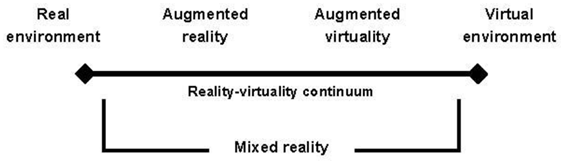
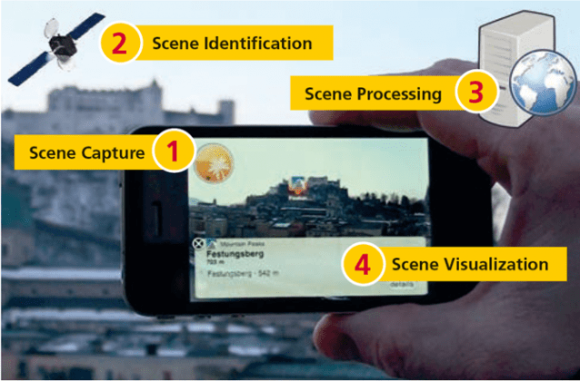
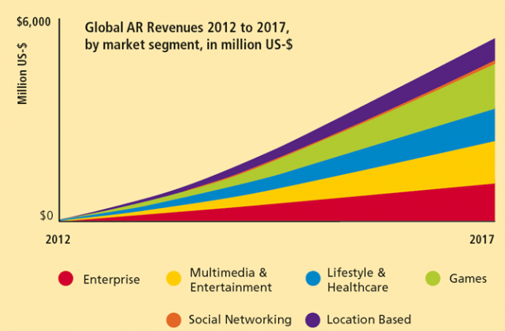

Introducere
În această lucrare, prezentăm o scurtă istorie, definițiile și principalele elemente și noțiuni, care stau la baza domeniului realității augmentate.
Istoric
Termenul de realitate augmentată apare pentru prima dată în anii 1950, când Morton Heilig, un cameraman de film în mișcare, credea că cinematografia ca artă ar trebui să fie capabilă să atragă privitorul în activitatea de pe ecran (Alkhamisi și Monowar, 2013). În 1962, Heilig a dezvoltat un model al ideii sale, pe care el la numit în 1955 ca “Cinemaul viitorului”, cunoscut sub numele de Senorma, care exista înainte de calculul digital (Carmigniani et al., 2011). Apoi, Ivan Sutherland a inventat capul montat în 1966 (Krevelen și Poelman, 2010), (Carmigniani et al., 2011). În 1968, el a dezvoltat un prototip de lucru al primului sistem AR (Yuen et. al., 2011). După aceea, Myron Krueger în 1975 a înființat un laborator de realitate artificială, denumit locație video. Este o zonă care permite utilizatorilor să se ocupe cu ușurință cu elementele virtuale pentru prima dată (Carmigniani et al., 2011), (Carmigniani și Furht, 2011).
La începutul anilor 1990, AR a devenit un domeniu de studiu. În 1997, Ronald Azuma a efectuat primul studiu în AR, în timp ce el a introdus o definiție larg acceptată a AR. El a definit-o ca asamblarea mediului real și a celui virtual, în timp ce ambele sunt înregistrate în 3D și interactive în timp real (Carmigniani et al., 2011), (Ford și Höllerer, 2008). În anul 2000, Bruce Thomas a inventat primul joc mobil AR și a prezentat-o în timpul Simpozionului Internațional cu privire la calculatoarele portabile (Carmigniani et al., 2011), (Carmigniani și Furht, 2011). În 2007 au fost dezvoltate noi aplicații medicale. Apoi, mai multe aplicații AR au fost proiectate în special pentru aplicațiile mobile, de ex. Wikitude AR Travel Guide a fost creat în 2008 (Carmigniani et al., 2011). În 2008, Gartner Inc. a așteptat ca AR să se numere printre primele 10 tehnologii în perioada 2008-2012 (Yuen et. al., 2011). În plus, este clar că numărul de aplicații accesibile pe bază de AR a crescut brusc și s-a extins pentru a include nu doar aplicațiile de căutare bazate pe locație, ci și aplicații de rețele sociale, jocuri, instruire, stil de viață și asistență medicală individuală (Ford și Höllerer, 2008). Figura 1 prezintă evoluția realității augmentate de-a lungul istoriei.

Definiții
Realitatea augmentată (AR) este o variantă a mediilor virtuale (Virtual Environments – VE) sau a realităților virtuale, așa cum este denumită mai frecvent. Tehnologiile VE imersează un utilizator complet în interiorul unui mediu sintetic (Azuma, 1997).
Pentru a limita AR la tehnologii specifice, în lucrarea (Azuma, 1997), autorul definește un sistem AR ca un sistem având următoarele trei caracteristici:
- Combină mediul real cu cel virtual;
- Interactive în timp real;
- Funcționează în 3-D.
De ce este realitatea augmentată o tematică interesantă de cercetare? De ce este utilă combinarea obiectelor reale și virtuale în 3-D? Realitatea augmentată îmbunătățește percepția utilizatorului și îl ajută în interacțiunea cu lumea reală. Obiectele virtuale afișează informații pe care utilizatorul nu le poate detecta direct cu propriile simțuri. Informațiile transmise de obiectele virtuale ajută un utilizator să realizeze sarcini concrete din lumea reală. AR este un exemplu specific a ceea ce Fred Brooks numește amplificarea inteligenței (IA): folosirea calculatorului ca instrument pentru a face o sarcină mai ușoară pentru un om (Brooks, 1996). Au fost explorate mai multe tipuri de aplicații ce folosesc AR: vizualizare medicală, întreținere și reparații, adnotări, planificarea traseelor robotului, divertisment și navigarea și orientarea aeronavelor militare.
În 2010, în lucrarea (Krevelen și Poelman, 2010), autorii prezintă noțiunea de realitate virtuală continuă (reality-virtuality continuum), definită inițial de (Milgram și Kishino, 1994) (Figura 2), în care AR este o parte a domeniului general de realitate combinată. Ambele medii virtuale (sau realități virtuale) și virtualizarea augmentată, în care obiectele reale sunt adăugate la cele virtuale, înlocuiesc mediul înconjurător cu un mediu virtual. În contrast, AR furnizează o virtualitate locală. Atunci când se analizează nu doar artificialitatea, ci și transportul utilizatorilor, (Benford et al., 1998) clasifică AR ca fiind separat atât de VR, cât și de teleprezență (Figura 1). Conform (Azuma, 1997) și (Azuma et. al, 2001), un sistem AR:
- combină obiectele reale și virtuale într-un mediu real;
- înregistrează (aliniază) obiectele reale și virtuale unele cu altele; și
- rulează interactiv, în trei dimensiuni și în timp real.

Definim realitatea augmentată (AR) ca o vizualizare directă sau indirectă în timp real a unui mediu din lumea reală fizică care a fost îmbunătățită/augmentată prin adăugarea de informații virtuale generate de calculator. (Carmigniani și Furht, 2011)
Dispozitive AR
Principalele dispozitive folosite de realitatea augmentată sunt ecranele folosite la afișare, dispozitivele de intrare, dispozitivele de urmărire și calculatoarele, (Carmigniani și Furht, 2011).
- Ecranele folosite la afișare – sunt trei tipuri principale: dispozitive montate pe cap (head mounted displays (HMD)), dispozitive portabile și ecrane spațiale.
- Dispozitive de intrare – sunt de mai multe tipuri: unele folosesc mănuși, altele brățări fără fir, în cazul telefoanelor de tip smart-phone, chiar telefonul, altele interpretează gesturile utilizatorului, altele interpretează atingerea ecranului de către utilizator, etc.
- Dispozitive de urmărire (tracking) – constau din camere digitale cu sau fără senzori optici, GPS, accelerometre, compas, senzori wireless, etc.
- Calculatoarele – un sistem AR necesită un procesor puternic și suficientă memorie RAM pentru a putea procesa imaginile preluate de cameră. Până acum, s-au folosit laptopu-urile, iar creșterea în performanțe a telefoanelor inteligente și a tabletelor au făcut ca evoluția acestor sisteme să fie din ce în ce mai rapidă. Sistemele complexe fixe încă folosesc calculatoare clasice cu plăci grafice puternice.
Interfețe AR
Unul dintre aspectele cele mai importante ale realității augmentate este crearea unor tehnici adecvate pentru interacțiunea intuitivă între utilizator și conținutul virtual al aplicațiilor AR. Există patru modalități principale de interacțiune în aplicațiile AR: interfețe AR tangibile, interfețe AR colaborative, interfețe AR hibride și interfețe multimodale emergente, (Carmigniani și Furht, 2011).
- Interfețe AR tangibile – Interfețele tangibile sprijină interacțiunea directă cu lumea reală prin exploatarea utilizării obiectelor și instrumentelor fizice reale. Un exemplu clasic de putere a interfețelor utilizator tangibile este aplicația VOMAR dezvoltată de (Kato et al., 2000), care permite unei persoane să selecteze și să rearanjeze mobilierul într-o cameră de locuit folosind o aplicație AR.
- Interfețe AR colaborative – Interfețele colaborative AR includ utilizarea mai multor afișaje pentru a sprijini activitățile la distanță și cele co-localizate. Distribuția co-localizării utilizează interfețe 3D pentru a îmbunătăți spațiul fizic de lucru colaborativ. În partajarea la distanță, AR este capabilă să integreze fără efort multiple dispozitive cu locații multiple pentru a îmbunătăți teleconferințele.
- Interfețe AR hibride – Interfețele hibride combină o serie de interfețe diferite, dar complementare, precum și posibilitatea de a interacționa printr-o gamă largă de dispozitive de interacțiune (ISMAR, 2002). Acestea oferă o platformă flexibilă pentru o interacțiune neplanificată, de zi cu zi, în care nu se știe în prealabil ce tip de afișaj sau dispozitive de interacțiune vor fi folosite.
- Interfețe AR multimodale – Interfețele multimodale combină intrările de la obiecte reale cu forme naturale de limbă și comportament precum vorbirea, atingerea, gesturile naturale ale mâinii sau privirea. Aceste tipuri de interfețe au apărut mai recent.
Arhitectura unui sistem bazat pe AR
Arhitectura generală a unui sistem ce folosește realitate augmentată este prezentat mai jos în Figura 3 (Glockner et al., 2014).

Cele patru sarcini efectuate de sistemul AR sunt: captura scenă; identificarea scenelor pentru alegerea informațiilor exacte pentru a le stimula; prelucrarea scenei și vizualizarea scenei augmentate (Cai et al., 2012) (Lopez et al., 2010). Aceste sarcini sunt descrise în detaliu după cum urmează (Alkhamisi și Monowar, 2013):
Capturarea scenei
În general, dispozitivele folosite în captura scenă sunt componente fizice care recunosc realitatea care ar trebui să fie augmentată. Există două tipuri de dispozitive de capturare a scenei:
- Dispozitive cu cameră video: astfel de dispozitive captează realitatea într-un mod diferit de celelalte dispozitive utilizate pentru vizualizarea realității augmentate (de exemplu, camere video și telefoane inteligente) (Lopez et al., 2010).
- Dispozitive de vizualizare: Aceste dispozitive capturează realitatea și oferă o imagine a acesteia cu ajutorul informațiilor augmentate (de exemplu, dispozitive montate pe cap) (Lopez et al., 2010).
Tehnici de identificare a scenei
Identificarea scenei clasifică scenariile. De asemenea, este considerată una dintre principalele acțiuni întreprinse în realitatea augmentată. Există două tipuri de tehnici de identificare a scenei cu următoarele caracterisitici:
- Bazate pe marker: Abordarea bazată pe marker folosește markerii care sunt sub formă de etichete vizuale conținute în scena reală percepută de sistemul AR (Lopez et al., 2010)..
- Nebazate pe marker: Sistemele AR care nu utilizează markeri folosesc dispozitivele pentru identificarea scenelor. Ca un browser de AR, acesta utilizează etichete pentru a ajuta utilizatorii să analizeze și să navigheze printre datele dintr-un mediu digital asociat mediului real.
Procesarea scenei
După calcularea spotului unui marker specific în spațiul real, în funcție de parametrii interiori și exteriori ai camerei, sistemul caută modelul virtual corespunzător fiecărui marker în 3D.
Vizualizarea scenei
La sfârșit, sistemul produce imaginea obiectului 3D și a spațiului real proiectat și trece pe imaginea de scenă care amestecă realitatea și virtualizarea în cazul utilizării marker-ului și prezintă informațiile digitale atunci când nu se utilizează ca tehnică de identificare a scenei markeri.
Concluzii
Domeniul realității augmentate are o istorie consistentă începând cu anii 50, evoluând de la an la an și fiind din ce în ce mai folosit. Articolul de față a prezentat noțiunile de bază din acest domeniu, și elementele care stau la baza unui sistem bazat pe AR. Pentru a înțelege mai bine impactul acestui domeniu putem analiza profiturile aplicațiilor care folosesc AR, din perioada 2012-2017 (Figura 4).

Bibliografie:
- Alkhamisi, A. O., Monowar, M. M. (2013) Rise of Augmented Reality: Current and Future Application Areas. International Journal of Internet and Distributed Systems, 2013, vol. 1, pp. 25-34. Published Online November 2013 (http://www.scirp.org/journal/ijids) http://dx.doi.org/10.4236/ijids.2013. 14005
- Azuma, R. T. (1997) A survey of Augmented Reality. In Presence: Teleoperators and Virtual Environments 6, 4 (August 1997), pp. 355-385.
- Azuma, R. T., Baillot, Y., Behringer, R., Feiner, S. K., Julier, S., MacIntyre, B. (2001) Recent advances in augmented reality. IEEE Computer Graphics and Applications, vol. 21, no. 6, pp. 34–47, Nov./Dec. 2001.
- Benford, S., Greenhalgh, C., Reynard, G., Brown, C., Koleva, B. (1998) Understanding and constructing shared spaces with mixed-reality boundaries. ACM Trans. Computer-Human Interaction, vol. 5, no. 3, pp. 185– 223, Sep. 1998.
- Brooks, F. P. Jr. (1996) The Computer Scientist as Toolsmith II. CACM 39, 3 (March 1996), pp. 61-68.
- Cai, S., Wang, X., Gao, M., Yu, S. (2012) Simulation Teaching in 3D Augmented Reality Environment. IIAI International Conference on Advanced Applied Informatics, (IIAIAAI), Fukuoka, 20-22 September 2012, pp. 83- 88.
- Carmigniani, J., Furht, B. (2011) Augmented Reality: An Overview. Handbook of Augmented Reality, DOI 10.1007/978-1-4614-0064-6 1, © Springer Science+Business Media, LLC.
- Carmigniani, J., Furht, B., Anisetti, M., Ceravolo, Damiani, P., Ivkovic, M. (2011) Augmented Reality Technologies, Systems and Applications. Multimedia Tools and Applications, Vol. 51, No. 1, pp. 341-377. http://dx.doi.org/10.1007/s11042-010-0660-6
- Ford, J., Höllerer, T. (2008) Augmented Reality and Future of Virtual Workspaces. In: Handbook of Research on Virtual Workplaces and the New Nature of Business Practices, IGI Global, Santa Barbara, pp. 486-502.
- Glockner, H., Jannek, K., Mahn, J., Theis, B. (2014) Augmented reality in logistics. Changing the way we see logistics – a DHL perspective, 2014, Publisher: DHL Customer Solutions & Innovation.
- ISMAR’02: Proc. 1st Int’l Symp. on Mixed and Augmented Reality, Darmstadt, Germany, Sep. 30-Oct. 1 2002. IEEE CS Press. ISBN 0-7695-1781-1.
- Kato, H., Billinghurst, M., Poupyrev, I., Imamoto, K., Tachibana, K. (2000) Virtual Object Manipulation on a Table-Top AR Environment. ISAR’00, pp. 111–119, 2000.
- Krevelen, D.W.F., Poelman, R. (2010) A Survey of Augmented Reality Technologies, Applications and Limitations. The International Journal of Virtual Reality, vol. 9, no. 2, pp. 1-20.
- López, H., Navarro, A., Relaño, J. (2010) An Analysis of Augmented Reality Systems. 2010 Fifth International Multi-Conference on Computing in the Global Information Technology (ICCGI 2010), 20-25 September 2010, Valencia, pp. 245-250.
- Milgram, P., Kishino, F. (1994) A taxonomy of mixed reality visual displays. IEICE Trans. Information and Systems, E77-D (12), pp. 1321–1329, Dec. 1994.
- Yuen, S. C.-Y., Yaoyuneyong, G. Johnson, E. (2011) Augmented Reality: An Overview and Five Directions for AR in Education. Journal of Educational Technology Development and Exchange, Vol. 4, No. 1, pp. 119-140.